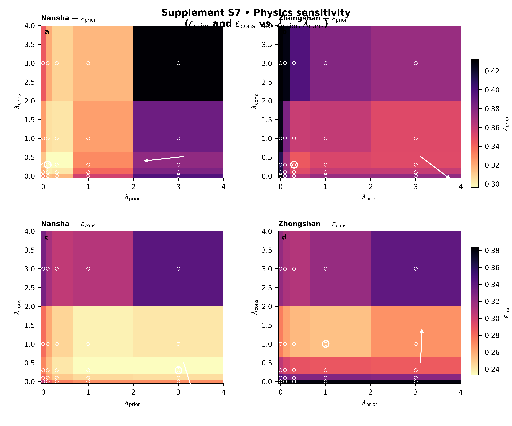
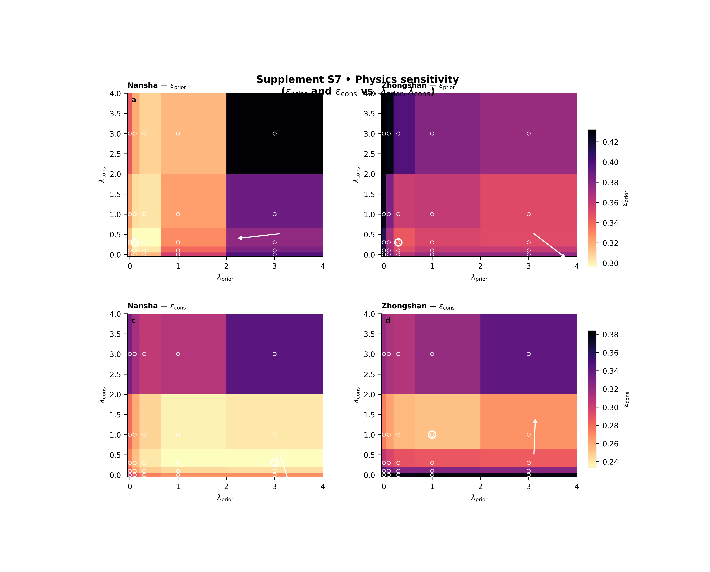

Note
Go to the end to download the full example code.
Physics sensitivity: learning how lambda choices reshape the physics diagnostics#
This example teaches you how to read the GeoPrior physics- sensitivity figure.
This figure is not about maps. It is about control knobs.
In GeoPrior, two of the most important physics weights are:
\(\lambda_{\mathrm{prior}}\)
\(\lambda_{\mathrm{cons}}\)
The physics-sensitivity figure asks a very practical question:
If we move around in this lambda plane, how do the key physics diagnostics respond?
That is useful because many training workflows eventually reach a point where the user asks:
Should I increase the prior pressure?
Should I strengthen the consolidation term?
Is there a stable region in parameter space rather than a single lucky point?
What this figure shows#
The plotting backend builds a two-row figure over the \((\lambda_{\mathrm{prior}}, \lambda_{\mathrm{cons}})\) plane.
Row 1 shows the chosen prior-side metric, usually \(\epsilon_{\mathrm{prior}}\).
Row 2 shows the chosen consolidation-side metric, usually \(\epsilon_{\mathrm{cons}}\).
One column is drawn per city, and each row uses a shared colorbar across cities so comparisons remain fair.
The script supports three rendering modes:
heatmaptricontourpcolormesh
It can also:
filter rows by city,
filter by model name,
filter by
pde_mode,mark the best point,
and draw a trend arrow showing the local improvement direction in parameter space.
In this lesson, we will make a compact synthetic ablation table, run the real CLI backend on it, and then interpret the result.
Imports#
We use the real plotting entrypoint from the project code. This gallery page is therefore a teaching wrapper around the actual plotting command.
from __future__ import annotations
import tempfile
from pathlib import Path
import matplotlib.image as mpimg
import matplotlib.pyplot as plt
import numpy as np
import pandas as pd
from geoprior._scripts.plot_physics_sensitivity import (
plot_physics_sensitivity_main,
)
Step 1 - Build a synthetic lambda grid#
We create a small parameter grid over two physics weights:
lambda_prior
lambda_cons
The synthetic data are not meant to be “the true model”. They are meant to teach the user how to read the figure.
We will create two cities:
Nansha
Zhongshan
and let each city have a slightly different optimum region in the lambda plane.
lambda_prior_vals = np.array([0.0, 0.1, 0.3, 1.0, 3.0])
lambda_cons_vals = np.array([0.0, 0.1, 0.3, 1.0, 3.0])
Step 2 - Create a compact synthetic ablation table#
The real script accepts explicit input files in .csv / .json / .jsonl format. We therefore create a tidy CSV that looks like a lightweight ablation table.
Important columns for this figure are:
city
model
pde_mode
lambda_prior
lambda_cons
epsilon_prior
epsilon_cons
The script can also work with other metrics such as coverage80, sharpness80, r2, mae, mse, rmse, and pss.
Here we shape the synthetic surfaces so that:
Nansha prefers a moderate prior weight and moderate consolidation weight,
Zhongshan prefers a slightly stronger prior weight,
and both metrics are lower-is-better.
rows: list[dict[str, float | str]] = []
for city in ("Nansha", "Zhongshan"):
for lp in lambda_prior_vals:
for lc in lambda_cons_vals:
if city == "Nansha":
eps_prior = (
0.28
+ 0.12 * (np.log10(lp + 0.12) + 0.45) ** 2
+ 0.05 * (np.log10(lc + 0.12) + 0.20) ** 2
+ 0.02 * np.sin(1.8 * lp + 0.8 * lc)
)
eps_cons = (
0.22
+ 0.05 * (np.log10(lp + 0.12) + 0.10) ** 2
+ 0.11 * (np.log10(lc + 0.12) + 0.40) ** 2
+ 0.02 * np.cos(1.4 * lc + 0.5 * lp)
)
else:
eps_prior = (
0.32
+ 0.13 * (np.log10(lp + 0.12) + 0.10) ** 2
+ 0.06 * (np.log10(lc + 0.12) + 0.30) ** 2
+ 0.03 * np.sin(1.2 * lp + 0.4 * lc)
)
eps_cons = (
0.26
+ 0.04 * (np.log10(lp + 0.12) + 0.30) ** 2
+ 0.13 * (np.log10(lc + 0.12) + 0.05) ** 2
+ 0.02 * np.cos(1.7 * lc + 0.6 * lp)
)
coverage80 = np.clip(
0.92
- 0.10 * eps_prior
- 0.08 * eps_cons,
0.65,
0.98,
)
sharpness80 = 18.0 + 14.0 * eps_cons
r2 = np.clip(
0.94 - 0.55 * eps_prior - 0.35 * eps_cons,
0.15,
0.95,
)
mae = 4.0 + 8.5 * eps_cons
mse = 20.0 + 18.0 * eps_prior + 10.0 * eps_cons
rmse = np.sqrt(mse)
pss = 0.04 + 0.20 * eps_cons
rows.append(
{
"city": city,
"model": "GeoPriorSubsNet",
"pde_mode": "both",
"lambda_prior": float(lp),
"lambda_cons": float(lc),
"epsilon_prior": float(eps_prior),
"epsilon_cons": float(eps_cons),
"coverage80": float(coverage80),
"sharpness80": float(sharpness80),
"r2": float(r2),
"mae": float(mae),
"mse": float(mse),
"rmse": float(rmse),
"pss": float(pss),
}
)
df = pd.DataFrame(rows)
df.head()
Step 3 - Inspect the best points directly#
Before plotting, it is useful to compute the best points in the table itself. Since epsilon_prior and epsilon_cons are both lower-is-better diagnostics, we locate their minima for each city. The plotting backend will also highlight the best point.
best_rows: list[dict[str, float | str]] = []
for city, sub in df.groupby("city", sort=True):
i1 = int(sub["epsilon_prior"].idxmin())
i2 = int(sub["epsilon_cons"].idxmin())
best_rows.append(
{
"city": city,
"best_for": "epsilon_prior",
"lambda_prior": float(df.loc[i1, "lambda_prior"]),
"lambda_cons": float(df.loc[i1, "lambda_cons"]),
"metric_value": float(df.loc[i1, "epsilon_prior"]),
}
)
best_rows.append(
{
"city": city,
"best_for": "epsilon_cons",
"lambda_prior": float(df.loc[i2, "lambda_prior"]),
"lambda_cons": float(df.loc[i2, "lambda_cons"]),
"metric_value": float(df.loc[i2, "epsilon_cons"]),
}
)
best_df = pd.DataFrame(best_rows)
print(best_df.to_string(index=False))
city best_for lambda_prior lambda_cons metric_value
Nansha epsilon_prior 0.1 0.3 0.294888
Nansha epsilon_cons 3.0 0.3 0.230867
Zhongshan epsilon_prior 0.3 0.3 0.344164
Zhongshan epsilon_cons 1.0 1.0 0.252832
Step 4 - Save the synthetic table#
The real script supports explicit input files, so we write the table to CSV and then call the true plotting entrypoint exactly as a user would.
Input table written to: C:\Users\Daniel\AppData\Local\Temp\gp_sg_phys_sens_ldapbj58\ablation_sensitivity.csv
Step 5 - Run the real plotting command#
We call the real command entrypoint with:
one explicit CSV input,
epsilon_prior for row 1,
epsilon_cons for row 2,
pcolormesh rendering,
visible sample points,
and trend arrows turned on.
The script also writes a copy of the used tidy table next to the figure outputs.
plot_physics_sensitivity_main(
[
"--input",
str(csv_path),
"--metric-prior",
"epsilon_prior",
"--metric-cons",
"epsilon_cons",
"--render",
"pcolormesh",
"--models",
"GeoPriorSubsNet",
"--pde-modes",
"both",
"--trend-arrow",
"true",
"--show-points",
"true",
"--show-title",
"true",
"--show-legend",
"true",
"--out-dir",
str(tmp_dir),
"--out",
"physics_sensitivity_gallery",
],
prog="plot-physics-sensitivity",
)

[OK] table -> C:\Users\Daniel\AppData\Local\Temp\gp_sg_phys_sens_ldapbj58\tableS7_physics_used.csv
[OK] figs -> C:\Users\Daniel\AppData\Local\Temp\gp_sg_phys_sens_ldapbj58\physics_sensitivity_gallery.png | C:\Users\Daniel\AppData\Local\Temp\gp_sg_phys_sens_ldapbj58\physics_sensitivity_gallery.pdf
Step 6 - Display the saved figure in the gallery page#
The plotting script writes PNG and PDF outputs. To ensure the figure is visible directly inside Sphinx-Gallery, we reload the PNG and display it here.
img = mpimg.imread(
tmp_dir / "physics_sensitivity_gallery.png"
)
fig, ax = plt.subplots(figsize=(7.2, 5.8))
ax.imshow(img)
ax.axis("off")

(np.float64(-0.5), np.float64(4999.5), np.float64(4049.5), np.float64(-0.5))
Step 7 - Read the table that the script actually used#
The backend writes a table named:
tableS7_physics_used.csv
That is helpful because it shows the exact rows that survived canonicalization, filtering, unit harmonization, and deduping.
used_df = pd.read_csv(
tmp_dir / "tableS7_physics_used.csv"
)
print("")
print("Used-table summary")
print(
used_df.groupby("city")[["epsilon_prior", "epsilon_cons"]]
.agg(["min", "max", "mean"])
.round(4)
)
Used-table summary
epsilon_prior epsilon_cons
min max mean min max mean
city
Nansha 0.2949 0.4310 0.3334 0.2309 0.3423 0.2711
Zhongshan 0.3442 0.4734 0.3818 0.2528 0.3940 0.3181
Step 8 - How to read the figure#
Let us now read the page like a real user.
Row 1: epsilon_prior#
This row tells you how the prior-side physics mismatch changes as you move through the lambda plane.
Darker / lighter regions matter depending on the metric and the colormap direction, but in the default scientific reading the “best” region is the one with the most favorable value, and the script can highlight that best point directly.
Row 2: epsilon_cons#
This row tells you how the consolidation-side mismatch responds to the same lambda changes.
The most important lesson is that the two rows do not always prefer the exact same region. That is normal. Physics tuning is often about finding a stable compromise rather than forcing one metric to its absolute minimum.
Columns: one city per column#
Because each row uses a shared color scale across cities, you can compare Nansha and Zhongshan fairly within the same metric. That is important: without shared scaling, one city could look artificially better only because its panel was rescaled.
The best-point marker#
The script marks the best point in parameter space for each panel. That gives the user an immediate visual answer to:
“Where is the local optimum for this metric?”
The trend arrow#
The trend arrow is subtle but very useful. It is based on a fitted plane in parameter space and points toward the estimated improvement direction. For lower-is-better metrics such as epsilon_prior and epsilon_cons, that arrow is flipped so it points toward decreasing error.
What this synthetic example teaches#
In this lesson, the two cities were designed to have related but not identical preferred regions. That is a realistic situation: a lambda pair that is comfortable for one city may not be equally comfortable for another.
In practice, that means:
look for broad stable basins, not only one isolated point,
compare row 1 and row 2 together,
and prefer regions where both cities behave reasonably well.
Step 9 - Practical takeaway#
This figure is best used when you are deciding how strongly to weight the physics terms in training.
It does not replace final model evaluation. It helps you choose a sensible regime before committing to a longer experiment campaign.
A good region in this figure often has three properties:
it is not an isolated pixel,
it keeps both prior and consolidation diagnostics under control,
and it behaves acceptably across cities.
Command-line version#
The same figure can be produced from the command line.
The real script supports:
explicit inputs with –input (repeatable),
root scanning via –root / –results-root,
filtering by model names,
filtering by pde_mode,
metric choices such as epsilon_prior, epsilon_cons, r2, coverage80, sharpness80, mae, mse, rmse, and pss,
- three render styles:
heatmap | tricontour | pcolormesh
and output of the figure plus the used tidy table.
Legacy dispatcher:
python -m scripts plot-physics-sensitivity \
--root results \
--metric-prior epsilon_prior \
--metric-cons epsilon_cons \
--render heatmap \
--models GeoPriorSubsNet \
--pde-modes both \
--trend-arrow true \
--out supp_fig_S7_physics_sensitivity
Explicit input file:
python -m scripts plot-physics-sensitivity \
--input results/ablation_table.csv \
--metric-prior epsilon_prior \
--metric-cons epsilon_cons \
--render pcolormesh \
--show-points true \
--trend-arrow true \
--out supp_fig_S7_physics_sensitivity
Modern CLI:
geoprior plot physics-sensitivity \
--root results \
--metric-prior epsilon_prior \
--metric-cons epsilon_cons \
--render tricontour \
--out supp_fig_S7_physics_sensitivity
The gallery page teaches the figure. The command line reproduces it in a real workflow.
Total running time of the script: (0 minutes 18.334 seconds)